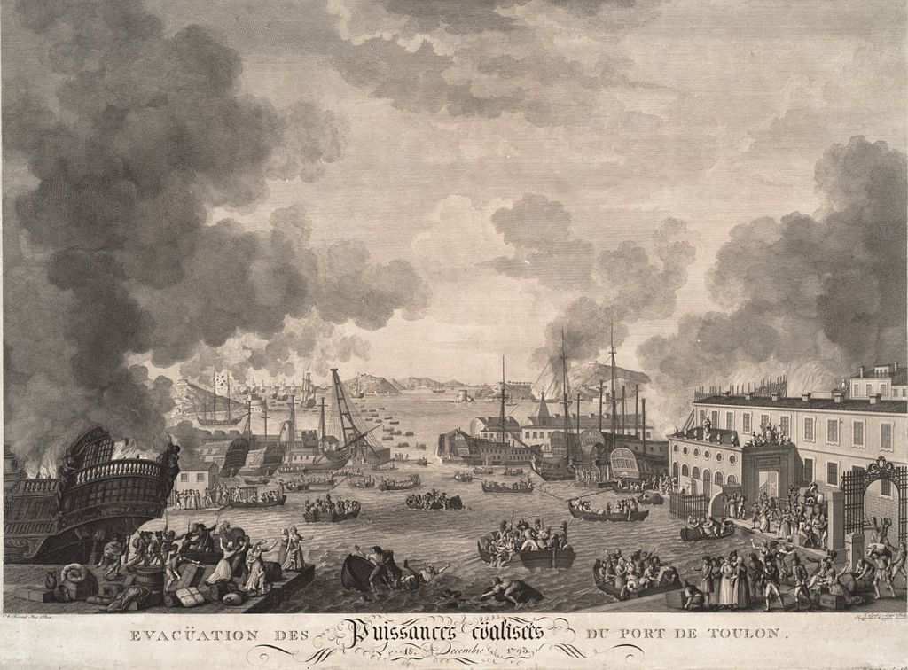
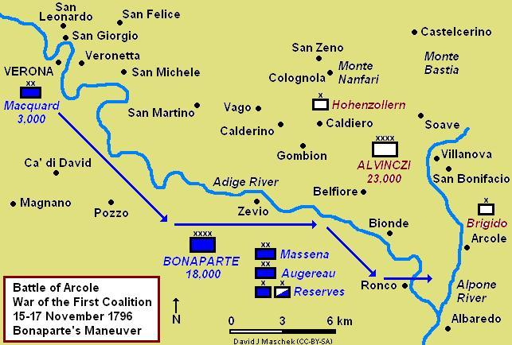
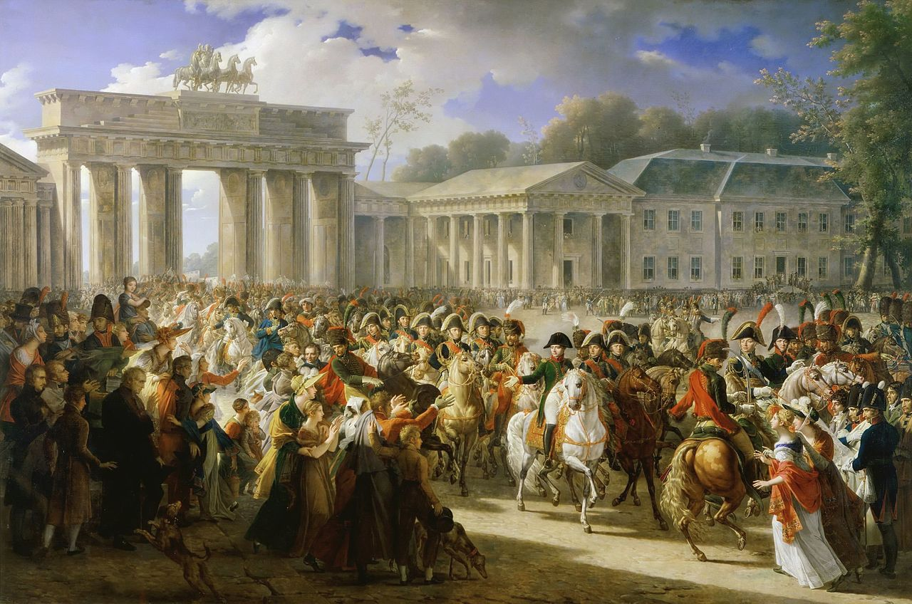

Now what ? - 잿더미 속에서
게시: 2020-12-28T06:30:15+09:00
나폴레옹이 위대한 군사 지도자가 된 이유는 대포를 기가 막히게 잘 쏘았기 때문도 아니었고, 전에 없던 신박한 보병 전술을 개발했기 때문도 아니었습니다. 나폴레옹은 승리를 위해 꺾어야 할 목표를 명확하게 선정하는데 탁월한 재주가 있었고, 그 목표 달성을 위해 놀라운 집념을 보여주었습니다. 그는 적의 도시를 함락시키는데는 별 관심이 없었고, 항상 적의 주력 부대를 신속하게 격파하는 것에 열을 올렸습니다. 아니, 좀더 정확하게 말하면 그의 목표는 적 주력 부대의 병사들을 많이 죽이는 것이 아니라 적의 전투 역량과 의지를 꺾는 것이었고, 그 목표 달성을 위해서 위험을 떠안고 막대한 희생을 치르는 것을 전혀 꺼리지 않았습니다. 대표적인 것이 그의 출세 계기였던 툴롱(Toulon) 포위전이었습니다. 1793년 툴롱을 포위한 혁명군에게 전달할 보급품 마차 호송대를 맡아 참전한 보잘 것 없는 일개 중위였던 나폴레옹은 '이 포위전의 핵심은 툴롱의 성벽이 아니라 툴롱 항구의 영국 함대이며, 저 함대만 물러나면 툴롱은 저절로 함락된다'라고 정확하게 파악했습니다. 그래서 툴롱 항구를 포격할 인근 고지를 점령함으로써 문제를 해결했지요. 그 공로로 그는 대번에 장군으로 승진할 수 있었습니다. 그런 모습은 1796년 아르콜레(Arcole) 다리의 전투에서도 빛났습니다. 그는 압도적인 병력과 우월한 지리적 위치를 이용하여 자신을 패배시킨 오스트리아군의 약점이 보급이라는 것을 파악하고, 빌라노바(Villanova)의 보급창을 습격하기 위해 티끌만한 성공 가능성에도 불구하고 아르콜레 다리에서 피말리는 전투를 벌였습니다. 그러니까 나폴레옹을 축구 선수에 비유를 하자면, 탁월한 슈팅 실력이 있는 공격수라기보다는 위치 선정에 탁월했던 공격수라고 할 수 있었습니다.

(1793년 툴롱에서 철수하는 영국 함대입니다. 나폴레옹이 점령한 고지에서 첫번째 대포알이 툴룽 항구 수면을 때리자마자 영국 해군은 황급히 닻을 올리고 도망쳤습니다.)

(아르콜레 다리 위의 나폴레옹이라는 그림입니다. 물론 실제와는 거리가 먼 그림입니다만, 그렇다고 나폴레옹이 당시 자신의 업적을 홍보하기 위해 그리게 한 작품은 아니고 훗날 Horace Vernet라는 화가가 그린 것입니다.)

(아르콜레 다리 전투의 상황도입니다. 칼디에로에서 패배하여 로미와와 줄리엣의 도시 베로나까지 물러났던 나폴레옹이 펼친 저 과감한 우회 작전의 스케일을 보십시요. 저때 당시 북쪽에서는 또다른 오스트리아군이 베로나를 향해 남하하고 있었는데, 그런 상황 속에서도 지푸라기 같은 희망을 붙잡고 빌라노바의 보급창 습격을 감행했던 것입니다.) 그랬기 때문에 나폴레옹은 한번도 빈이나 베를린, 밀라노나 마드리드를 궁극적 목표로 생각한 적이 없었습니다. 그런데 대체 왜 이번에는 모스크바 점령을 목표로 했을까요? 실은 이번 원정도 모스크바 점령이 목표가 아니었습니다. 좀더 정확하게는 바클레이나 쿠투조프가 이끌던 러시아 야전군의 섬멸도 목표가 아니었습니다. 그런 것들은 부수적인 수단에 불과했고, 진짜 목표는 알렉산드르를 굴복시켜 러시아를 다시 대륙 봉쇄령의 일원으로 만드는 것이었습니다. 그러니까 알렉산드르와의 동맹을 위해 알렉산드르를 친다는 것이 이 전쟁의 기본틀이었는데, 더 근본적인 빅 픽처는 영국을 치기 위해 러시아를 공격한다는 것이었습니다. 대륙 봉쇄령 자체가 영국 공격을 위한 것이었으니까요. 하지만 이건 누가 봐도 매우 이상한 그림이었습니다. 나폴레옹이 모스크바에 이르게 된 배경을 되짚어 보면 이렇습니다. 영국 해군 때문에 영국을 공격할 수가 없으니 대륙 봉쇄령으로 영국을 괴롭히려 했는데, 러시아가 그에 따르질 않으니 러시아를 굴복시키려 군대를 동원했고, 러시아가 너무 넓어서 러시아군이 싸우질 않고 자꾸 후퇴를 하니 어쩔 수 없이 모스크바를 점령한 것입니다. 나폴레옹은 네만 강을 건널 때 모스크바를 점령하겠다는 생각은 전혀 하지 않았습니다. 러시아군의 뒤를 쫓다보니 이렇게 된 것입니다. 나폴레옹이 주도권을 쥐지 못하고 어쩔 수 없이 남의 꽁무니를 쫓는다는 것 자체가 좋지 못한 그림이었습니다. 의도한 바는 아니었지만, 그래도 천신만고 끝에 모스크바를 점령했을 때 나폴레옹은 일반 병사들처럼 이제 곧 전쟁이 끝나리라 생각했습니다. 전쟁 시작 전부터 나폴레옹은 러시아의 심장은 역사적으로나 지리적으로나 경제적으로나 모스크바라고 인식하고 있었고, 모스크바는 알렉산드르의 멱살을 쥐고 흔들 수 있는 매우 소중한 인질이자 자산이라고 믿었습니다. 그 믿음이 흔들린 것은 9월 14일 오후 모스크바 성문 앞에 열쇠를 들고 공손히 자신을 기다리는 모스크바 시청 직원이 아무도 없는 것을 보았을 때였습니다. 뭔가 잘못 되었다는 불길한 느낌은 아름다운 모스크바를 잿더미로 만든 대화재로 인해 현실이 되었습니다. 시민들이 거의 다 떠나버리고 건물들마저 불에 타 잿더미가 된 모스크바는 아무런 정치적 외교적 자산이 될 수 없었습니다. 그를 가장 경악시킨 것은 그 대화재가 바로 러시아인들이 조직적으로 저질렀다는 사실이었습니다. 마피아 두목으로부터 몸값을 받아내기 위해 많은 희생을 치르고 간신히 손에 넣은 인질이 알고 보니 마피아 두목이 애지중지하는 외동딸이 아니라 그 집 가정부라는 사실을 알았을 때가 아마 그런 심정이었을 것입니다. 이제 뭘 하지? 라는 질문이 모두의 머리 속을 맴돌았습니다. 1798년 아부키르의 프랑스 함대가 넬슨의 영국 해군에게 전멸당해 꼼짝없이 이집트에 갇히게 되었을 때도 '역사가 나에게 오리엔트 정복을 강요하는군' 이라며 태연하게 콘스탄티노플과 인도로의 원정을 구상하던 나폴레옹조차, 이 때는 그 질문에 대해 답을 하지 못했습니다. 원래는 모스크바에 편히 앉아 평화를 구걸하러 오는 알렉산드르를 기다릴 작정이었으나, 로스톱친이 모스크바를 불태운 것을 보면 그런 일은 일어나지 않으리라는 것이 분명했습니다. 상황이 이렇게 되자 나폴레옹이 이번 러시아 원정에서 저지른 실수들, 또는 한계들이 뼈저리게 다가오기 시작했습니다. 가장 대표적인 것이 러시아 농노제에 대한 그의 입장이었습니다. 나폴레옹이 유럽을 석권할 수 있었던 이유는 그가 뛰어난 군사적 천재였다는 점도 있었지만, 프랑스 대혁명에 기반한 그의 뛰어난 정치력도 큰 몫을 했습니다. 당시 아직 신분제 사회였던 유럽 각국 정부는 계몽주의와 입헌군주제라는 근대화의 파도에 저항하고 있었으나 각국의 살롱과 증권 거래소, 커피 하우스에서는 성장하는 시민계급의 그런 세습 신분제에 대한 불만이 팽배해 있었습니다. 나폴레옹은 그런 시민계급의 불만을 이용하여 가는 곳마다 나폴레옹 법전으로 대변되는 새로운 질서를 약속하며 현지인들의 지지를 받아가며 유럽을 정복했습니다. 스위스나 이탈리아는 적어도 초기에는 그를 오스트리아 합스부르크 왕가의 굴레를 벗겨주는 해방자로 인식했었고, 베를린에 입성할 때는 새로운 시대를 가져오는 영웅으로서 중산층 시민들의 환호를 받았으며 , 심지어 스페인에서조차 무능하고 부패한 부르봉 왕가의 전제 정치로부터 스페인을 구원해줄 계몽군주로 나폴레옹을 환영하는 사람들을 얼마든지 찾을 수 있었습니다. 그 결과는 점령지에서 시민들의 협조를 받을 수 있었다는 것이었습니다. 베를린을 정복한 뒤 프로이센 빌헬름 3세의 뒤를 추격할 때나, 빈을 정복한 뒤 아우스테를리츠에서 오스트리아-러시아 연합군과 싸울 때, 나폴레옹은 후방 걱정을 하지 않았고 오히려 현지 중산층들을 무장시켜 치안 유지에 활용할 수 있었습니다. 그런 배경이 있었기 때문에 빌헬름 3세나 프란츠 1세 등 그의 적들은 나폴레옹과 굴욕적인 협상을 맺을 수 밖에 없었습니다.

(1806년 베를린에 입성하는 나폴레옹을 환영하는 베를린 시민들의 모습입니다. 나폴레옹이 정작 파리로 개선할 때 파리 시민들은 이미 시큰둥한 반응을 보였기 때문에 나폴레옹의 부하들이 돈을 주고 고용한 사람들이 길거리에서 바람잡이 역할을 해야 할 정도였다고 합니다만, 아직 나폴레옹의 실체를 접하지 못한 정복지의 시민들은 나폴레옹이라는 인물로 체화된 새로운 시대에 대한 기대감으로 적장 나폴레옹을 진심으로 환영했었습니다. 그림 왼쪽 상단에 보이는 문이 오늘날에도 베를린을 상징하는 건축물인 브란덴부르크 개선문입니다. 베를린의 개선문은 나폴레옹이, 파라의 개선문은 비스마르크가 이용했다는 것이 역사의 참된 코미디이지요. 저 개선문 위의 사두마차상에 대해서도 얽힌 이야기가 많습니다만 그건 이미 전에 다루었으므로 패스.) 그러나 러시아는 귀족과 농노 외에 시민계급이 없었고, 나폴레옹은 그의 정치력을 발휘하여 지지를 이끌어 낼 대상을 찾을 수 없었습니다. 나폴레옹이 진정한 민중의 지도자였다면 내친 김에 유럽 최후의 농노제 국가인 러시아에서 농노 해방령을 내리고 러시아 사회를 근본적으로 뒤흔들었을 것입니다. 그러나 그는 그런 사회 혁명가가 아니었습니다. 그의 러시아 원정 목적은 러시아 민중 해방이 아니라 대륙 봉쇄령의 완성이었고, 그 자신이 이미 아들에게 황위를 물려주기 위해 안달이 난 세습 신분제의 옹호자가 되어 있었습니다. 나폴레옹이 이젠 지킬 것이 많아 우유부단해진 살찌고 나이든 특권층이 되어 예전과는 달라졌다고 해도, 그가 바보가 된 것은 아니었습니다. 그는 페트로프스코예 궁전에서 모스크바로 돌아올 때, 이미 다음 작전을 구상 중이었습니다. 그리고 그 작전의 기본 방향은 모스크바에서 철수한다는 것이었습니다. 이건 매우 합리적인 결정이었습니다. 이제 아무런 인질 가치를 가지지 못하는 잿더미 모스크바를 쥐고 있을 필요가 없었습니다.
그러나 막상 철수를 하려고 보니 그의 발목을 잡는 것이 한둘이 아니었습니다. 과연 나폴레옹은 어디로 향하려 했고 무엇이 그를 모스크바에 주저앉혔을까요 ? Source : 1812 Napoleon's Fatal March on Moscow by Adam Zamoyski
en.wikipedia.org/wiki/Siege_of_Toulon
en.wikipedia.org/wiki/Battle_of_Arcole